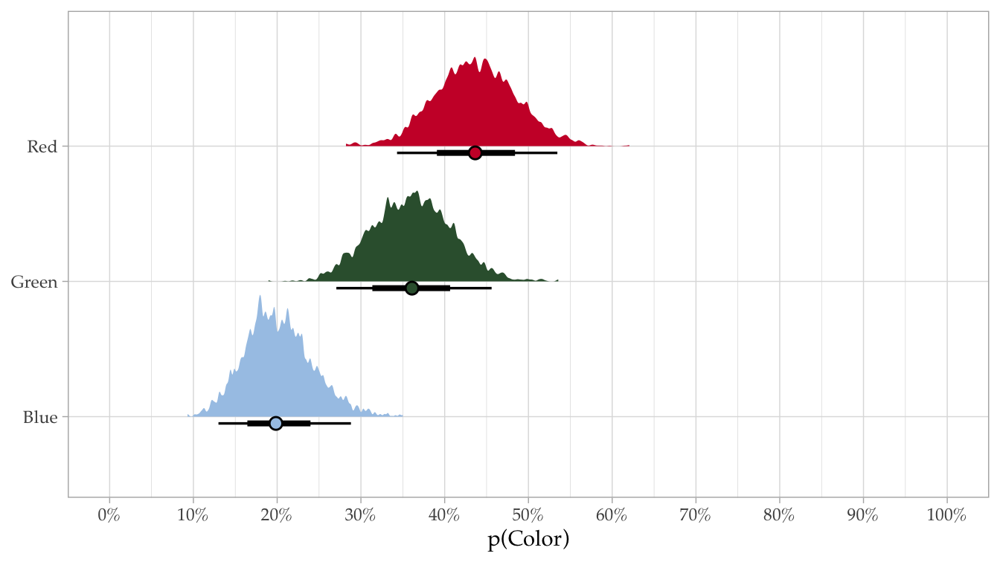

# Doc setup
knitr::opts_chunk$set(
echo = TRUE,
fig.asp = 9/16,
fig.algn = "center",
out.width = "100%"
)
# Load libs
library("tidyverse")
library("ggdist")
library("brms")
library("here")
library("scales")
library("marginaleffects")
library("tinytable")
library("glue")
# Set seed for reproducibility
set.seed(20240224)
# Set theme for plots
theme_set(theme_light(base_family = "Palatino"))
# Set some colors
cols <- c( "#A7C7E7" = "blue", "#355E3B" = "green", "#cc0033" = "red")Simple multinomial logistic regression using BDA
First, let’s load some libraries and setup our document.
Next, we simulate some data for the analysis.
# dataframe variables
n_ids <- 50
n_lang <- 2
n_item_reps <- 15
probs_en <- c(0.2, 0.5, 0.8)
probs_sp <- c(0.8, 0.2, 0.5)
choices <- c("Green", "Blue", "Red")
# Set up dataframe
dat <- tibble(
id = rep(glue::glue("id_{1:n_ids}"), times = n_lang),
Language = rep(c("English", "Spanish"), each = n_ids),
Response = c(
sample(x = choices, size = n_ids, replace = TRUE, prob = probs_en),
sample(x = choices, size = n_ids, replace = TRUE, prob = probs_sp)
)
)We are going to pretend we did some sort of experiment in which we asked bilingual people their favorite cup out of three options: a red cup, a green cup, and a blue cup. We will assume the cups are exactly the same except for the colors. A priori, there is no reason to think that people would have different preferences based on which language they are asked in, but this is made up data, so we’ll ignore that for now. Let’s take a look at what we made.
head(dat)# A tibble: 6 × 3
id Language Response
<chr> <chr> <chr>
1 id_1 English Red
2 id_2 English Green
3 id_3 English Blue
4 id_4 English Blue
5 id_5 English Red
6 id_6 English Green glimpse(dat)Rows: 100
Columns: 3
$ id <chr> "id_1", "id_2", "id_3", "id_4", "id_5", "id_6", "id_7", "id_8…
$ Language <chr> "English", "English", "English", "English", "English", "Engli…
$ Response <chr> "Red", "Green", "Blue", "Blue", "Red", "Green", "Blue", "Red"…We have a tidy data frame with 3 columns (i.e., 3 variables). There is data from 50 individuals, in each of their languages (Spanish, English), leaving us with 50 \(\times\) 2 = 100 observations. Now let’s get some general descriptives.
dat |>
count(Response) |>
mutate(Total = sum(n), Prop = n / Total) |>
tt(theme = "bootstrap", width = 0.7) |>
style_tt(j = 2:4, align = "r")| Response | n | Total | Prop |
|---|---|---|---|
| Blue | 22 | 100 | 0.22 |
| Green | 35 | 100 | 0.35 |
| Red | 43 | 100 | 0.43 |
It’s clear we see a higher propensity to select red overall, but let’s make a plot for fun.
dat |>
count(Response) |>
mutate(
total = sum(n),
prop = n / total,
Response = fct_reorder(Response, prop)
) |>
ggplot() +
aes(x = prop, color = Response) +
geom_segment(
aes(x = 0, xend = prop, y = Response, yend = Response),
lineend = "round", linewidth = 17, show.legend = F, alpha = 0.5
) +
geom_segment(
aes(x = 0, xend = prop, y = Response, yend = Response),
lineend = "round", linewidth = 13, show.legend = F
) +
geom_text(aes(y = Response, label = prop), color = "white", show.legend = F) +
scale_color_manual(values = names(cols)) +
scale_x_continuous(breaks = seq(0, 1, 0.1), expand = c(0, 0, 0, 0.05)) +
coord_cartesian(xlim = c(0, 1)) +
labs(y = NULL, x = "Proportion of responses") Ok. Looks good. We see that, overall, red was selected most, followed by green, and then blue. Now we can build our first Bayesian model. We will fit a simple, intercept-only model, ignoring language for now. The specification will be as follows:
\[ \begin{aligned} &\ \textbf{Multinomial probability of selection of color}_i \\ \text{Color}_{i} \sim&\ \operatorname{Categorical}(\{\mu_{blue,i}, \mu_{green,i}, \mu_{red,i}\}) \\[10pt] &\ \textbf{Model for probability of each option} \\ \{\mu_{blue,i}, \mu_{green,i}, \mu_{red,i}\} =&\ \beta_0 \\[5pt] &\ \textbf{Priors} \\ \beta_{0} \sim&\ \mathcal{N} (0, 2) \qquad\qquad\ \ \text{Prior for choice-level coefficients} \\ \end{aligned} \]
Essentially, the goal of this first model is to get posterior estimates of the probability of selecting red, green, or blue, which should align with what we just saw in Table 1 and Figure 1. We specify the model as follows.
# This is the BRMS syntax of the model highlighted above
form <- bf(Response ~ 0 + Intercept)
# Use get_prior if you need help figuring out the priors
# get_prior(formula = form, family = categorical(link = "logit"), data = dat)
# prior class coef dpar source
# (flat) b muGreen default
# (flat) b Intercept muGreen (vectorized)
# (flat) b muRed default
# (flat) b Intercept muRed (vectorized)
# Set priors
simple_priors <- c(
prior(normal(0, 2), class = b, dpar = muGreen),
prior(normal(0, 2), class = b, dpar = muRed)
)
# Fit simple model
b_multi_0 <- brm(
formula = form,
prior = simple_priors,
iter = 2000, warmup = 1000, cores = 4,
data = dat,
family = categorical(link = "logit"),
file = here("b_multi_0")
)
# Get posterior and store in vector
mod0_post <- predictions(model = b_multi_0) |>
posterior_draws() We can take a look at the model output using summary(), but it often isn’t very helpful with this type of model.
summary(b_multi_0) Family: categorical
Links: muGreen = logit; muRed = logit
Formula: Response ~ 0 + Intercept
Data: dat (Number of observations: 100)
Draws: 4 chains, each with iter = 2000; warmup = 1000; thin = 1;
total post-warmup draws = 4000
Population-Level Effects:
Estimate Est.Error l-95% CI u-95% CI Rhat Bulk_ESS Tail_ESS
muGreen_Intercept 0.59 0.28 0.03 1.15 1.00 1247 1383
muRed_Intercept 0.79 0.27 0.26 1.34 1.00 1358 1630
Draws were sampled using sampling(NUTS). For each parameter, Bulk_ESS
and Tail_ESS are effective sample size measures, and Rhat is the potential
scale reduction factor on split chains (at convergence, Rhat = 1).Let’s use summarize the posterior to get an idea of probability of each choice. For fun we will make a table and a plot just like Table 1 and Figure 1. They should be essentially the same, but now we are summarizing an entire distribution of estimates, so we can include uncertainty in Table 2 and Figure 2.
mod0_post |>
group_by(group) |>
median_qi(x = draw) |>
transmute(
Response = group,
Estimate = glue("{round(x, 3)} [{round(.lower, 3)}, {round(.upper, 3)}]")
) |>
tt(theme = "bootstrap", width = 0.7,
notes = "Posterior median and 95% CI") |>
style_tt(j = 2, align = "r")| Response | Estimate |
|---|---|
| Posterior median and 95% CI | |
| Blue | 0.199 [0.13, 0.288] |
| Green | 0.361 [0.271, 0.456] |
| Red | 0.436 [0.343, 0.535] |
mod0_post |>
ggplot() +
aes(x = draw, y = group, fill = group) +
stat_slab(show.legend = F) +
stat_pointinterval(
show.legend = F, pch = 21, position = position_nudge(y = -0.05)
) +
scale_fill_manual(values = names(cols)) +
scale_x_continuous(breaks = seq(0, 1, 0.1), labels = label_percent()) +
coord_cartesian(xlim = c(0, 1)) +
labs(y = NULL, x = "p(Color)")
It worked! Looks good. Now we will fit a more complex model in which we include the language in which the person was asked, Spanish or English, but first let’s look at the descriptives.
dat |>
group_by(Language) |>
count(Response) %>%
mutate(
total = sum(n), prop = n / total,
Language = case_when(
Language == "English" & Response == "Blue" ~ "English",
Language == "Spanish" & Response == "Blue" ~ "Spanish",
TRUE ~ ""
)
) |>
tt(theme = "bootstrap", width = 0.7) |>
style_tt(j = 2:4, align = "r")| Language | Response | n | total | prop |
|---|---|---|---|---|
| English | Blue | 15 | 50 | 0.30 |
| Green | 4 | 50 | 0.08 | |
| Red | 31 | 50 | 0.62 | |
| Spanish | Blue | 7 | 50 | 0.14 |
| Green | 31 | 50 | 0.62 | |
| Red | 12 | 50 | 0.24 |
dat |>
group_by(Language) |>
count(Response) |>
mutate(
total = sum(n),
prop = n / total,
se = sd(prop) / sqrt(n),
.groups = "drop"
) |>
ggplot() +
aes(y = Response, x = prop, color = Response, shape = Language) +
geom_linerange(
aes(xmin = prop - se, xmax = prop + se, y = Response),
linewidth = 4, lineend = "round", alpha = 0.5,
position = position_dodge(0.5), show.legend = T
) +
geom_point(size = 3, stroke = 2.5, position = position_dodge(0.5)) +
scale_color_manual(name = NULL, values = names(cols), guide = "none") +
scale_shape_manual(name = NULL, values = 21:22) +
scale_x_continuous(breaks = seq(0, 1, 0.1), labels = label_percent()) +
coord_cartesian(xlim = c(0, 1)) +
labs(y = NULL, x = NULL) +
theme(legend.position = c(1, 0), legend.justification = c(1, 0),
legend.background = element_blank())Great. So Table 3 and Figure 3 give us an idea of what’s going on (big differences in responding “red” or “green” based on language… again, make-up data). Now we will fit a model that accounts for language. Because language is a within participants variable (every participant was asked in English and Spanish) we will including a grouping variable for id with a varying slope of language. The model formulation is as follows:
\[ \begin{aligned} &\ \textbf{Multinomial probability of selection of color}_i \textbf{ in respondent}_j \\ \text{Choice}_{i_j} \sim&\ \operatorname{Categorical}(\{\mu_{1,i_j}, \mu_{2,i_j}, \mu_{3,i_j}\}) \\[10pt] &\ \textbf{Model for probability of each option} \\ \{\mu_{1,i_j}, \mu_{2,i_j}, \mu_{3,i_j}\} =&\ (\beta_0 + b_{0_j}) + \beta_1 \text{Language[Spanish]}_{i_j} \\[5pt] b_{0_j} \sim&\ \mathcal{N}(0, \sigma_0) \qquad\quad\quad \text{Respondent-specific offsets from global probability} \\[10pt] &\ \textbf{Priors} \\ \beta_{0 \dots 1} \sim&\ \mathcal{N} (0, 2) \qquad\qquad\ \ \text{Prior for choice-level coefficients} \\ \sigma_0 \sim&\ \operatorname{Exponential}(1) \quad \text{Prior for between-respondent variability} \end{aligned} \]
Now we fit the model in brms.
# Specify model formula
form2 <- bf(Response ~ 0 + Intercept + Language + (1 + Language | ID | id))
# Use get_prior with unsure about priors
# get_prior(formula = form2, family = categorical(link = "logit"), data = dat)
# class coef dpar source
# cor default
# cor (vectorized)
# b muGreen default
# b Intercept muGreen (vectorized)
# b LanguageSpanish muGreen (vectorized)
# sd muGreen default
# sd muGreen (vectorized)
# sd Intercept muGreen (vectorized)
# sd LanguageSpanish muGreen (vectorized)
# b muRed default
# b Intercept muRed (vectorized)
# b LanguageSpanish muRed (vectorized)
# sd muRed default
# sd muRed (vectorized)
# sd Intercept muRed (vectorized)
# sd LanguageSpanish muRed (vectorized)
# Fit model
b_multi_1 <- brm(
formula = form2,
prior = c(
prior(normal(0, 2), class = b, dpar = muGreen),
prior(normal(0, 2), class = b, dpar = muRed),
prior(exponential(1), class = sd, dpar = muGreen),
prior(exponential(1), class = sd, dpar = muRed),
prior(lkj(1), class = cor)
),
iter = 2000, warmup = 1000, cores = 4,
data = dat,
family = categorical(link = "logit"),
file = here("b_multi_1")
)Let’s take a look at the model summary:
summary(b_multi_1) Family: categorical
Links: muGreen = logit; muRed = logit
Formula: Response ~ 0 + Intercept + Language + (1 + Language | ID | id)
Data: dat (Number of observations: 100)
Draws: 4 chains, each with iter = 2000; warmup = 1000; thin = 1;
total post-warmup draws = 4000
Group-Level Effects:
~id (Number of levels: 50)
Estimate Est.Error l-95% CI
sd(muGreen_Intercept) 0.87 0.64 0.02
sd(muGreen_LanguageSpanish) 1.00 1.01 0.03
sd(muRed_Intercept) 0.43 0.41 0.01
sd(muRed_LanguageSpanish) 1.29 1.24 0.04
cor(muGreen_Intercept,muGreen_LanguageSpanish) 0.05 0.44 -0.77
cor(muGreen_Intercept,muRed_Intercept) -0.00 0.45 -0.80
cor(muGreen_LanguageSpanish,muRed_Intercept) -0.02 0.44 -0.80
cor(muGreen_Intercept,muRed_LanguageSpanish) -0.05 0.44 -0.82
cor(muGreen_LanguageSpanish,muRed_LanguageSpanish) -0.03 0.44 -0.82
cor(muRed_Intercept,muRed_LanguageSpanish) -0.12 0.45 -0.86
u-95% CI Rhat Bulk_ESS
sd(muGreen_Intercept) 2.35 1.00 756
sd(muGreen_LanguageSpanish) 3.73 1.00 1152
sd(muRed_Intercept) 1.51 1.00 1338
sd(muRed_LanguageSpanish) 4.54 1.00 876
cor(muGreen_Intercept,muGreen_LanguageSpanish) 0.83 1.00 2690
cor(muGreen_Intercept,muRed_Intercept) 0.81 1.00 4658
cor(muGreen_LanguageSpanish,muRed_Intercept) 0.80 1.00 3132
cor(muGreen_Intercept,muRed_LanguageSpanish) 0.80 1.00 2301
cor(muGreen_LanguageSpanish,muRed_LanguageSpanish) 0.80 1.00 2015
cor(muRed_Intercept,muRed_LanguageSpanish) 0.75 1.00 1727
Tail_ESS
sd(muGreen_Intercept) 1457
sd(muGreen_LanguageSpanish) 1888
sd(muRed_Intercept) 1151
sd(muRed_LanguageSpanish) 1366
cor(muGreen_Intercept,muGreen_LanguageSpanish) 2431
cor(muGreen_Intercept,muRed_Intercept) 3113
cor(muGreen_LanguageSpanish,muRed_Intercept) 3165
cor(muGreen_Intercept,muRed_LanguageSpanish) 2354
cor(muGreen_LanguageSpanish,muRed_LanguageSpanish) 2573
cor(muRed_Intercept,muRed_LanguageSpanish) 2409
Population-Level Effects:
Estimate Est.Error l-95% CI u-95% CI Rhat Bulk_ESS
muGreen_Intercept -1.06 0.59 -2.33 -0.03 1.00 2337
muGreen_LanguageSpanish 2.93 0.81 1.50 4.68 1.00 2265
muRed_Intercept 0.74 0.34 0.09 1.44 1.00 4692
muRed_LanguageSpanish 0.04 0.74 -1.57 1.39 1.00 2620
Tail_ESS
muGreen_Intercept 2037
muGreen_LanguageSpanish 2244
muRed_Intercept 2704
muRed_LanguageSpanish 2341
Draws were sampled using sampling(NUTS). For each parameter, Bulk_ESS
and Tail_ESS are effective sample size measures, and Rhat is the potential
scale reduction factor on split chains (at convergence, Rhat = 1).And a plot to see how or model compares to the descriptives:
avg_predictions(
model = b_multi_1,
variables = "Language",
re_formula = NULL
) |>
posterior_draws() |>
ggplot() +
aes(x = draw, y = group, fill = group, group = Language, shape = Language) +
stat_halfeye(position = position_dodge(0.5), point_fill = "white") +
scale_fill_manual(name = NULL, values = names(cols), guide = "none") +
scale_shape_manual(name = NULL, values = 21:22) +
scale_x_continuous(breaks = seq(0, 1, 0.1), labels = label_percent()) +
coord_cartesian(xlim = c(0, 1)) +
labs(y = NULL, x = "p(Color|Language)") +
theme(legend.position = c(1, 0), legend.justification = c(1, 0),
legend.background = element_blank())It looks like Figure 4 captures what we saw qualitatively in Table 3 and Figure 3.